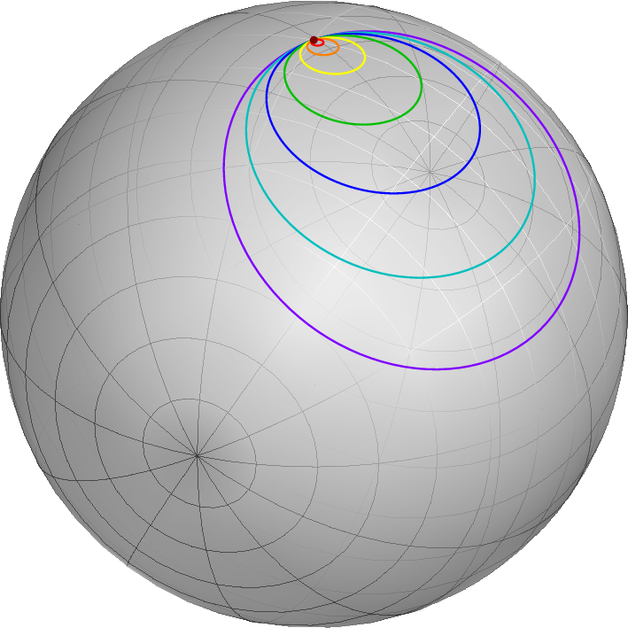

Chapter 65 Fundamental groups
Topologists can’t tell the difference between a coffee cup and a doughnut. So how do you tell anything apart?
This is a very hard question to answer, but one way we can try to answer it is to find some invariants of the space. To draw on the group analogy, two groups are clearly not isomorphic if, say, they have different orders, or if one is simple and the other isn’t, etc. We’d like to find some similar properties for topological spaces so that we can actually tell them apart.
Two such invariants for a space are
-
•
Defining homology groups , , …
-
•
Defining homotopy groups , , …
Homology groups are hard to define, but in general easier to compute. Homotopy groups are easier to define but harder to compute.
This chapter is about the fundamental group .
65.1 Fusing paths together
Recall that a path in a space is a function . Suppose we have paths and such that . We’d like to fuse111Almost everyone else in the world uses “gluing” to describe this and other types of constructs. But I was traumatized by Elmer’s glue when I was in high school because I hated the stupid “make a poster” projects and hated having to use glue on them. So I refuse to talk about “gluing” paths together, referring instead to “fusing” them together, which sounds cooler anyways. them together to get a path . Easy, right?
ΨΨsize(8cm);
ΨΨbigblob("$X$");
ΨΨpair A = Drawing("\gamma_1(0)", (-3,-1));
ΨΨpair B = Drawing("\gamma_1(1) = \gamma_2(0)", (1,1), dir(90));
ΨΨpair C = Drawing("\gamma_2(1)", (2,-2), dir(-90));
ΨΨpath p = A..(-2,0)..(0,0.5)..B;
ΨΨpath q = B..(1.8,-0.5)..C;
ΨΨdraw(p, red, EndArrow);
ΨΨdraw(q, blue, EndArrow);
ΨΨMP("\gamma_1", midpoint(p), dir(90));
ΨΨMP("\gamma_2", midpoint(q), dir(0));
Ψ
We unfortunately do have to hack the definition a tiny bit. In an ideal world, we’d have a path and and we could just merge them together to get . But the “” is wrong here. The solution is that we allocate for the first path and for the second path; we run “twice as fast”.
Definition 65.1.1.
Given two paths such that , we define a path by
This hack unfortunately reveals a second shortcoming: this “product” is not associative. If we take for some suitable paths, then , and are the times allocated for , , .
Question 65.1.2
What are the times allocated for ?
But I hope you’ll agree that even though this operation isn’t associative, the reason it fails to be associative is kind of stupid. It’s just a matter of how fast we run in certain parts.
ΨΨunitsize(6cm);
ΨΨDrawing( unitsquare);
ΨΨMP("0", (0,0), S);
ΨΨMP("1", (1,0), S);
ΨΨMP("\frac{1}{4}", (1/4, 0), S);
ΨΨMP("\frac{1}{2}", (1/2, 0), S);
ΨΨMP("0", (0,1), N);
ΨΨMP("1", (1,1), N);
ΨΨMP("\frac{3}{4}", (3/4, 1), N);
ΨΨMP("\frac{1}{2}", (1/2, 1), N);
ΨΨMP("\gamma_1", (1/8, 0), N);
ΨΨMP("\gamma_2", (3/8, 0), N);
ΨΨMP("\gamma_3", (3/4, 0), N);
ΨΨMP("\gamma_1", (1/4, 1), S);
ΨΨMP("\gamma_2", (5/8, 1), S);
ΨΨMP("\gamma_3", (7/8, 1), S);
ΨΨMP("\boxed{\gamma_1 \ast \left( \gamma_2 \ast \gamma_3 \right)}", (0.5,1.2), origin);
ΨΨMP("\boxed{\left( \gamma_1 \ast \gamma_2 \right) \ast \gamma_3}", (0.5,-0.2), origin);
ΨΨDrawing((1/4,0)--(1/2,1), blue);
ΨΨDrawing((1/2,0)--(3/4,1), blue);
ΨΨDrawing( (1/2,0)--(1/2,1), dotted);
Ψ
So as long as we’re fusing paths together, we probably don’t want to think of itself too seriously. And so we only consider everything up to (path) homotopy equivalence. (Recall that two paths and are homotopic if there’s a path homotopy between them, which is a continuous deformation from to .) It is definitely true that
It is also true that if and then .
Naturally, homotopy is an equivalence relation, so paths lives in some “homotopy type”, the equivalence classes under . We’ll denote this . Then it makes sense to talk about . Thus, we can think of as an operation on homotopy classes.
65.2 Fundamental groups
Prototypical example for this section: is trivial and .
At this point I’m a little annoyed at keeping track of endpoints, so now I’m going to specialize to a certain type of path.
Definition 65.2.1.
A loop is a path with .
ΨΨbigblob("$X$");
ΨΨpair A = Drawing("x_0", (-1,0), dir(100));
ΨΨpath p = A..(1,1)..(2,0)..(0.5,-1)..(-1.5,-0.5)..cycle;
ΨΨdraw(p, blue, EndArrow);
ΨΨMP("\gamma", midpoint(p), dir(-20));
Ψ
Hence if we restrict our attention to paths starting at a single point , then we can stop caring about endpoints and start-points, since everything starts and stops at . We even have a very canonical loop: the “do-nothing” loop222Fatty. given by standing at the whole time.
Definition 65.2.2.
Denote the trivial “do-nothing loop” by . A loop is nulhomotopic if it is homotopic to ; i.e. .
For homotopy of loops, you might visualize “reeling in” the loop, contracting it to a single point.
Example 65.2.3 (Loops in are nulhomotopic)
As the following picture should convince you, every loop in the simply connected space is nulhomotopic.
(Starting with the purple loop, we contract to the red-brown point.)
Hence to show that spaces are simply connected it suffices to understand the loops of that space. We are now ready to provide:
Definition 65.2.4.
The fundamental group of with basepoint , denoted , is the set of homotopy classes
equipped with as a group operation.
It might come as a surprise that this has a group structure. For example, what is the inverse? Let’s define it now.
Definition 65.2.5.
Given a path we can define a path
In effect, this “runs backwards”. Note that starts at the endpoint of and ends at the starting point of .
Exercise 65.2.6
Show that for any path , is homotopic to the “do-nothing” loop at . (Draw a picture.)
Let’s check it.
Proof that this is a group structure.
Clearly takes two loops at and spits out a loop at . We also already took the time to show that is associative. So we only have to check that (i) there’s an identity, and (ii) there’s an inverse.
-
•
We claim that the identity is the “do-nothing” loop we described above. The reader can check that for any ,
-
•
For a loop , recall again we define its “backwards” loop by
Then we have .
Hence is actually a group. ∎
Before going any further I had better give some examples.
Example 65.2.7 (Examples of fundamental groups)
Note that proving the following results is not at all trivial. For now, just try to see intuitively why the claimed answer “should” be correct.
-
(a)
The fundamental group of is the trivial group: in the plane, every loop is nulhomotopic. (Proof: imagine it’s a piece of rope and reel it in.)
-
(b)
On the other hand, the fundamental group of (meteor example from earlier) with any base point is actually ! We won’t be able to prove this for a while, but essentially a loop is determined by the number of times that it winds around the origin – these are so-called winding numbers. Think about it!
-
(c)
Similarly, we will soon show that the fundamental group of (the boundary of the unit circle) is .
Officially, I also have to tell you what the base point is, but by symmetry in these examples, it doesn’t matter.
Here is the picture for , with the hole exaggerated as the meteor from Section 7.7.
ΨΨsize(6cm);
ΨΨbigbox("$\mathbb C \setminus \{0\}$");
ΨΨfilldraw(scale(0.5)*unitcircle, grey, black);
ΨΨdot("$x_0$", (1.4,0), dir(0));
ΨΨdraw( (1.4,0)..(0,1.4)..(-1.4,0)..(1.4*dir(-30))..cycle, blue, EndArrow );
Ψ
Question 65.2.8
Convince yourself that the fundamental group of is , and understand why we call these “winding numbers”. (This will be the most important example of a fundamental group in later chapters, so it’s crucial you figure it out now.)
Example 65.2.9 (The figure eight)
Consider a figure eight , and let be the center. Then
is the free group generated on two letters. The idea is that one loop of the eight is , and the other loop is , so we expect to be generated by this loop and (and its inverses and ). These loops don’t talk to each other.
ΨΨΨdraw( shift( (1,0) ) * unitcircle, grey + 5 );
ΨΨΨdraw( shift( (-1,0) ) * unitcircle, grey + 5 );
ΨΨΨdot(origin);
ΨΨΨpath g = dir(20)..dir(100)..dir(180)..dir(260)..dir(340);
ΨΨΨdraw( shift( (1,0) ) * scale(0.8) * reflect(dir(90),dir(-90)) * g, blue, EndArrow );
ΨΨΨdraw( shift( (-1,0) ) * scale(0.8) * g, red, EndArrow );
ΨΨΨlabel("$a$", (-1.6,0), dir(0));
ΨΨΨlabel("$b$", (1.6,0), dir(180));
ΨΨ
Recall that in graph theory, we usually assume our graphs are connected, since otherwise we can just consider every connected component separately. Likewise, we generally want to restrict our attention to path-connected spaces, since if a space isn’t path-connected then it can be broken into a bunch of “path-connected components”. (Can you guess how to define this?) Indeed, you could imagine a space that consists of the objects on my desk (but not the desk itself): of my phone has nothing to do with of my mug. They are just totally disconnected, both figuratively and literally.
But on the other hand we claim that in a path-connected space, the groups are very related!
Theorem 65.2.10 (Fundamental groups don’t depend on basepoint)
Let be a path-connected space. Then for any and , we have
Before you read the proof, see if you can guess the isomorphism based just on the picture below.
ΨΨsize(7cm);
ΨΨbigblob("$X$");
ΨΨpair A = Drawing("x_1", (-1.5,0), dir(180));
ΨΨpair B = Drawing("x_2", (1.5,0), dir(0));
ΨΨdraw(A..(-2.5,-0.8)..(-2.5,0.9)..cycle, blue);
ΨΨdraw(B..(2.2,-1.1)..(2.4,0.8)..cycle, blue);
ΨΨdraw(A--B, red+dashed, Arrows);
ΨΨlabel("$\alpha$/$\overline{\alpha}$", origin, dir(90));
Ψ
Proof.
Let be any path from to (possible by path-connectedness), and let be its reverse. Then we can construct a map
In other words, given a loop at , we can start at , follow to , run , then run along home to . Hence this is a map which builds a loop of from every loop at . It is a homomorphism of the groups just because
as is nulhomotopic.
Similarly, there is a homomorphism
As these maps are mutual inverses, it follows they must be isomorphisms. End of story. ∎
This is a bigger reason why we usually only care about path-connected spaces.
Abuse of Notation 65.2.11.
For a path-connected space we will often abbreviate to just , since it doesn’t matter which we pick.
Finally, recall that we originally defined “simply connected” as saying that any two paths with matching endpoints were homotopic. It’s possible to weaken this condition and then rephrase it using fundamental groups.
Exercise 65.2.12
Let be a path-connected space. Prove that is simply connected if and only if is the trivial group. (One direction is easy; the other is a little trickier.)
This is the “usual” definition of simply connected.
65.3 Fundamental groups are invariant under homeomorphism
One quick shorthand I will introduce to clean up the discussion:
Definition 65.3.1.
By , we will mean that is a continuous function of spaces which also sends the point to .
Let and be topological spaces and . We now want to relate the fundamental groups of and .
Recall that a loop in is a map with . Then if we consider the composition
then we get straight-away a loop in at ! Let’s call this loop .
Lemma 65.3.2 ( is homotopy invariant)
If are path-homotopic, then in fact
Proof.
Just take the homotopy taking to and consider . ∎
It’s worth noting at this point that if and are homeomorphic, then their fundamental groups are all isomorphic. Indeed, let and be mutually inverse continuous maps. Then one can check that and are inverse maps between the groups (assuming and ).
65.4 Higher homotopy groups
Why the notation for the fundamental group? And what are , …? The answer lies in the following rephrasing:
Question 65.4.1
Convince yourself that a loop is the same thing as a continuous function .
It turns out we can define homotopy for things other than paths. Two functions are homotopic if there exists a continuous function which continuously deforms to . So everything we did above was just the special case .
For general , the group is defined as the homotopy classes of the maps . The group operation is a little harder to specify. You have to show that is homeomorphic to with some endpoints fused together; for example is with fused to . Once you have these cubes, you can merge them together on a face. (Again, I’m being terribly imprecise, deliberately.)
For , behaves somewhat differently than . (You might not be surprised, as is simply connected for all but not when .) In particular, it turns out that is an abelian group for all .
Let’s see some examples.
Example 65.4.2 ()
As we saw, ; given the base circle , we can wrap a second circle around it as many times as we want. In general, it’s true that .
Example 65.4.3 ( when )
We saw that , because a circle in can just be reeled in to a point. It turns out that similarly, any smaller -dimensional sphere can be reeled in on the surface of a bigger -dimensional sphere. So in general, is trivial for .
However, beyond these observations, the groups behave quite weirdly. Here is a table of for and , so you can see what I’m talking about. (Taken from Wikipedia.)
Actually, it turns out that if you can compute for every and , then you can essentially compute any homotopy classes. Thus, computing is sort of a lost cause in general, and the mixture of chaos and pattern in the above table is a testament to this.
65.5 Homotopy equivalent spaces
Prototypical example for this section: A disk is homotopy equivalent to a point, an annulus is homotopy equivalent to .
Up to now I’ve abused notation and referred to “path homotopy” as just “homotopy” for two paths. I will unfortunately continue to do so (and so any time I say two paths are homotopic, you should assume I mean “path-homotopic”). But let me tell you what the general definition of homotopy is first.
Definition 65.5.1.
Let be continuous functions. A homotopy is a continuous function , which we’ll write for , , such that
If such a function exists, then and are homotopic.
Intuitively this is once again “deforming to ”. You might notice this is almost exactly the same definition as path-homotopy, except that and are any functions instead of paths, and hence there’s no restriction on keeping some “endpoints” fixed through the deformation.
This homotopy can be quite dramatic:
Example 65.5.2
The zero function and the identity function are homotopic as functions . The necessary deformation is
I bring this up because I want to define:
Definition 65.5.3.
Let and be spaces. They are homotopy equivalent if there exist continuous functions and such that
-
(i)
is homotopic to the identity map on , and
-
(ii)
is homotopic to the identity map on .
If a topological space is homotopy equivalent to a point, then it is said to be contractible.
Question 65.5.4
Why are two homeomorphic spaces also homotopy equivalent?
Intuitively, you can think of this as a more generous form of stretching and bending than homeomorphism: we are allowed to compress huge spaces into single points.
Example 65.5.5 ( is contractible)
Consider the topological spaces and the space consisting of the single point . We claim these spaces are homotopy equivalent (can you guess what and are?) Indeed, the two things to check are
-
(i)
by is homotopy equivalent to the identity on , which we just saw, and
-
(ii)
by , which is the identity on .
Here by I just mean in the special case that the function is just an “inclusion”.
Remark 65.5.6 —
cannot be homeomorphic to a point because there is no bijection of sets between them.
Example 65.5.7 ( is homotopy equivalent to )
Consider the topological spaces , the punctured plane, and the circle viewed as a subset of . We claim these spaces are actually homotopy equivalent! The necessary functions are the inclusion
and the function
You can check that these satisfy the required condition.
Remark 65.5.8 —
On the other hand, cannot be homeomorphic to . One can make disconnected by deleting two points; the same is not true for .
Example 65.5.9 (, )
By the same token, a disk is homotopic to a point; an annulus is homotopic to a circle. (This might be a little easier to visualize, since it’s finite.)
I bring these up because it turns out that
Moral 65.5.10 —
Algebraic topology can’t distinguish between homotopy equivalent spaces.
More precisely,
Theorem 65.5.11 (Homotopy equivalent spaces have isomorphic fundamental groups)
Let and be path-connected, homotopy-equivalent spaces. Then for every positive integer .
Proof.
Let be a loop. Let and be maps witnessing that and are homotopy equivalent (meaning and are each homotopic to the identity). Then the composition
is a loop in and hence induces a natural homomorphism . Similarly induces a natural homomorphism . The conditions on and now say exactly that these two homomorphisms are inverse to each other, meaning the maps are isomorphisms. ∎
In particular,
Question 65.5.12
What are the fundamental groups of contractible spaces?
That means, for example, that algebraic topology can’t tell the following homotopic subspaces of apart.
♀ ♂
65.6 The pointed homotopy category
This section is meant to be read by those who know some basic category theory. Those of you that don’t should come back after reading Chapters 67 and 68. Those of you that do will enjoy how succinctly we can summarize the content of this chapter using categorical notions.
Definition 65.6.1.
The pointed homotopy category is defined as follows.
-
•
Objects: pointed spaces; that is, a pair of spaces with a distinguished basepoint , and
-
•
Morphisms: homotopy classes of continuous functions .
In particular, two path-connected spaces are isomorphic in this category exactly when they are homotopy equivalent. Then we can summarize many of the preceding results as follows:
Theorem 65.6.2 (Functorial interpretation of fundamental groups)
There is a functor
sending
The fact that is a functor instead of merely assigns some group to each pointed topological space automatically implies several nice things, like:
-
•
The functor bundles the information of , including the fact that it respects composition. In the categorical language, is .
-
•
Homotopic spaces have isomorphic fundamental groups (since the spaces are isomorphic in , and functors preserve isomorphism by Theorem 68.2.9). In fact, you’ll notice that the proofs of Theorem 68.2.9 and Theorem 65.5.11 are secretly identical to each other.
-
•
If maps are homotopic, then . This is basically Lemma 65.3.2.
Remark 65.6.3 —
In fact, is the set of arrows in , so this is actually a covariant Yoneda functor (Example 68.2.7), except with target instead of .
65.7 A few harder problems to think about
Problem 65A (Harmonic fan).
Exhibit a subspace of the metric space which is path-connected but for which a point can be found such that any -neighborhood of with is not path-connected.
Problem 65B (Special case of Seifert-van Kampen).
††margin:Let be a topological space. Suppose and are connected open subsets of , with , so that is nonempty and path-connected.
Prove that if then .
Remark 65.7.1 —
The Seifert–van Kampen theorem generalizes this for and any groups; it gives a formula for calculating in terms of , , . The proof is much the same.
Unfortunately, this does not give us a way to calculate , because it is not possible to write for connected.
Problem 65C (RMM 2013).
††margin:Let be a positive integer. A stone is placed at each vertex of a regular -gon. A move consists of selecting an edge of the -gon and swapping the two stones at the endpoints of the edge. Prove that if a sequence of moves swaps every pair of stones exactly once, then there is some edge never used in any move.
(This last problem doesn’t technically have anything to do with the chapter, but the “gut feeling” which motivates the solution is very similar.)